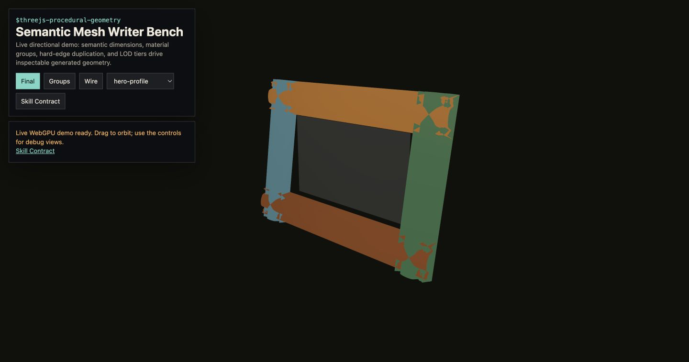

Primary implementation surface
These routes are generated from canonical source. Their exact status remains separate from implementation availability.

Live concept-proxy screenshot · not canonical evidenceBuild workload-selected procedural mesh systems in Three.js r185 WebGPU/TSL. Use for local terrain/coast contour compilation, terraced caps, cliffs, beaches, seabeds, sculpted profiles, oriented branch rings, semantic indexed BufferGeometry writers, explicit material slots, BatchedMesh versus InstancedMesh decisions, typed-array update paths, NodeMaterial surfaces, and projected-error geometry budgets.
These routes are generated from canonical source. Their exact status remains separate from implementation availability.
This skill contributes to the following cross-skill owner graphs.
Meshes are written by semantic writers: rings, profiles, and lofts emitted into indexed buffers with explicit attribute ownership. A profile swept along a frame uses parallel transport to avoid twist — the frame advances by the minimal rotation between tangents:
$$\mathbf n_{i+1} = R\big(\mathbf t_i \times \mathbf t_{i+1},\; \angle(\mathbf t_i, \mathbf t_{i+1})\big)\,\mathbf n_i$$Smooth normals accumulate face normals weighted by corner angle, then normalize: $\mathbf n_v = \operatorname{normalize}\sum_f \theta_{v,f}\,\mathbf n_f$. Index sharing versus splitting is decided by crease angle: split when $\mathbf n_a \cdot \mathbf n_b < \cos\theta_{crease}$.
Draw-call strategy is a budget decision: $N$ unique shapes × $M$ instances favors BatchedMesh when shapes vary, InstancedMesh when only transforms do — one material slot per identity either way.
Every image identifies what it proves. Page screenshots demonstrate the published presentation only; generated inputs demonstrate asset channels only; canonical acceptance still requires render-target readback and a schema-v2 bundle.
1 published imageThe complete SKILL.md as loaded by agents — verbatim, rendered.
Generate geometry from semantic dimensions and explicit coordinate frames. The
fast path is not "make triangles"; it is a reusable mesh compiler that writes
indexed BufferGeometry directly into preallocated typed arrays, owns smoothing
groups and material slots, and chooses BatchedMesh, InstancedMesh, or static
geometry from topology and update behavior before any vertex is emitted.
Use $threejs-choose-skills for preflight when geometry, materials, shadows, and
post processing all matter. This skill owns reusable mesh emission. Use
$threejs-procedural-buildings-and-cities for building grammars,
$threejs-procedural-vegetation for growth hierarchies, and then apply these
mesh-writer mechanisms inside those subject skills.
When geometry supplies collision or support, apply the shared
physics-domain and interaction contract.
Publish stable ColliderProxy records and a static SupportSurfaceSample
adapter from authoritative geometry/field topology. Its canonical
PhysicsSignalDescriptor and each batched PhysicsSampleRequest/
SupportSurfaceSample preserve contextId, requested/actual footprint and
filter, frame/origin/transform revision, state/resource version, validity,
per-channel error, residency, cadence/latency, and explicit absence. A request
uses its exact PhysicsInstant or PhysicsTimeInterval; the returned support
record uses sampleInstant: PhysicsInstant.
Convert world geometry once through PhysicsContext.worldToPhysicsTransform
and its sole metersPerWorldUnit; the proxy/provider serializes no reciprocal
or second scale. IDs, material bindings, frames, source versions, validity, and
error bounds are independent of render LOD, batching, and runtime triangle/
instance indices. Moving or
deforming support remains owned by motion/site/domain solvers through a
DeformingSupportProxy; this mesh compiler must not infer its velocity from
render-frame differences.
WebGPURenderer from three/webgpu; call await renderer.init().three/tsl with MeshStandardNodeMaterial,
MeshPhysicalNodeMaterial, MeshBasicNodeMaterial, or other NodeMaterial
family classes.RenderPipeline, pass(), mrt(),
PassNode.setResolutionScale(), built-in GTAONode, BloomNode,
TRAANode, CSMShadowNode, and TileShadowNode when those effects are
needed by the inspection scene.Fn().compute(count) through
renderer.compute() / renderer.computeAsync(), with StorageBufferAttribute,
StorageInstancedBufferAttribute, storage() nodes, and indirect draw buffers
where culling or compaction is compute-owned.SRGBColorSpace; HDR/EXR
radiance remains loader-declared linear. Geometry data, normals, masks,
LUTs, and procedural lookup textures use NoColorSpace/linear. Keep HDR
buffers as HalfFloatType until the single tone-map and output conversion
owner in the node pipeline via outputColorTransform or renderOutput().After initialization, use renderer.compute() for ordinary submission. r185
computeAsync() only initializes on demand before enqueueing and is not a
GPU-completion fence.
Use one native renderer path and degrade geometry quality, not backend:
await renderer.init();
if (renderer.backend.isWebGPUBackend !== true) {
throw new Error(
'WebGPU is required for the canonical procedural-geometry path; explicit fallback teaching belongs to threejs-compatibility-fallbacks.'
);
}
Legacy WebGL implementation (deprecated, do not extend): examples/sculpted-gallery-frame/frame-geometry.js
Canonical implementation contract: examples/semantic-mesh-writer/.
Run node examples/semantic-mesh-writer/validate-geometry.js --fixture frame-hero --json
after edits.
| space | owner | rule |
|---|---|---|
| world space | Three.js Y-up scene | app/camera owns view convention |
| rail-local | rail orientation | top/bottom/left/right map s along rail and profile width outward |
| profile-local | sculpted profile | t travels inner-to-outer, profile arc length owns production V |
| production UV | material sampler | store physical distance or repeats: u=distance/metersPerRepeat=distance*texelsPerWorld/textureAxisTexels; never pass raw texel coordinates as normalized UV |
debug (s,t) |
diagnostics only | stored in debugUv, never production material UV |
| winding | writer | outward quads use a, b, c / b, d, c |
| writer input | generator module | semantic dimensions, material slot, smoothing group, UV chart, boundary reason |
For local islands, archipelagos, reservoirs, river margins, and coastal sites,
consume one versioned field contract from $threejs-procedural-fields:
positive-inside shoreline distance, coast frame, raw elevation, bathymetry,
terrace levels, cliff top/toe, material identities, and placement exclusions.
Do not independently regenerate a shoreline in the terrain, seabed, material,
and placement paths.
Choose the mesh class from the observable:
| Contract | Representation |
|---|---|
| single-valued continuous relief under free close inspection | indexed adaptive grid, quadtree, or clipmap with explicit error and seam policy |
| hard stylized terraces, beaches, and vertical cliffs | contour-derived 2.5D caps plus explicit wall strips and band meshes |
| fixed set of moderate isolated landforms | compile each island into whole-object LODs before considering chunks |
| caves, arches, or overhangs whose topology is visible | bounded volumetric SDF meshing; marching cubes or dual contouring only after its memory/topology cost passes |
| static seed catalogue | precompute meshes and anchors when runtime regeneration has no product value |
The terraced compiler operates on superlevel regions
Omega_k={p:zRaw(p)>=L_k}. The horizontal cap at level L_k is the polygonal
region Omega_k minus Omega_(k+1); the boundary of Omega_(k+1) owns the wall
from L_k to L_(k+1). This handles split/merge topology without attempting
to pair unrelated contour vertices. Extract contours with marching squares and
an asymptotic decider for ambiguous cells; key intersections by global grid
edge plus iso-level so adjacent cells and chunks reuse the same result.
Use constrained triangulation for polygons with holes and robust predicates. Ear clipping is eligible only for validated simple loops. Duplicate render vertices across cap/wall, material, UV, and hard-normal boundaries, but retain a separate topological edge/vertex identity so manifold validation still knows the surfaces meet. A closed land body requires every topological edge to have two incident faces; explicitly declared waterline or chunk boundaries are the only exceptions.
Emit semantic slots such as terrain-cap, cliff-wall, dry-beach,
wet-beach, and visible-seabed. Caps use world-distance XZ UVs; walls use
coast arc length and physical height. Export stable shoreline/terrace boundary
IDs plus placement anchors carrying position, surface frame, coast distance,
slope, terrace ID, clearance, and seed. Buildings, docks, paths, vegetation,
and rocks consume those records and an explicit exclusion field; they must not
re-sample an approximate display mesh and invent new identities.
wet-beach is a static substrate/capacity identity and visible-seabed is a
geometry/visibility identity. Neither stores dynamic liquid, inundation, foam,
or precipitation state. Their materials consume the route-selected receiver
owner's immutable wetness/inundation snapshot and the water owner's completed
signals.
Read the full compiler, LOD, seam, and adversarial-validation contract in profile-sweeps-and-mesh-writers.md.
When requested by the route, compile a physics proxy package beside render
geometry. It references the active PhysicsContext, canonical
physicsFrameId/physicsOriginEpoch/transformRevision, source
field/topology revision, stable proxy and semantic IDs,
PhysicsMaterialId, support domain, sidedness, sample footprint policy, and
maximum position/support-height/normal error. A SupportSurfaceSample adapter
queries this package or its authoritative field, never the current display LOD
or camera depth.
SupportSurfaceSample is kinematic only. Its optional nearest-surface signed
separation is not a contact penetration/manifold. It does not own contact
lifecycle, impulses, or reactions. The collision solver owns
the canonical ContactManifoldRecord plus dimensional InteractionRecord ABI
and resolves impulses;
geometry supplies stable generation-bearing shape/support/feature identity and
bounded surface data only.
A view-independent geometry/deformation state publishes one leased
PresentedStatePair per stable binding/provider in
PhysicsPresentationCandidate; each previous/current arm carries independent
provenance, PhysicsInstant, state handle, and spatial binding. Per-view render
LOD, visibility, picking acceleration, shadow representation, cache state, and
reset actions belong to ViewPreparationPublication, after
CameraViewPublication owns the render mapping. The sealed snapshot references
candidate binding IDs and lease refs rather than copying pairs or transforms;
the multi-target FrameExecutionRecord owns completion and lease disposition.
A representation/topology change emits the scoped motion/history invalidation
reason. Static geometry is an explicit hold pair, not an unleased mutable
buffer, and a view-specific LOD is never baked into the shared candidate.
Graphics LOD may change vertices, groups, and draw representation while the
physics proxy identity remains fixed. A distinct physics proxy quality change
requires an explicit QualityTransition and new declared errors; it cannot be
triggered as a side effect of render LOD. This skill emits only static support.
Moving platforms, flexible structures, animated hulls, and edited deforming
surfaces require a versioned DeformingSupportProxy and transform/deformation
provider owned by the motion, site, or external solver adapter.
BufferGeometry writer for unique authored surfaces,
BatchedMesh for many same-material objects with varied topology,
InstancedMesh for repeated topology with per-instance transforms or
attributes, and storage/indirect buffers only when visibility or deformation
is hot enough to justify GPU-side generation.Uint16Array indices only when every referenced vertex fits, otherwise
use Uint32Array.addVertex, addTriangle, addQuad, addGroup,
startSmoothingGroup, startUvChart, and finishGeometry.(s,t) coordinates for local debug views or analytic node masks.computeVertexNormals() only for intentionally smooth shared-vertex regions;
for Mikk parity, await MikkTSpace.ready and call
computeMikkTSpaceTangents(geometry,MikkTSpace,negateSign). r185 de-indexes
indexed input, so treat it as a separate representation and recompute
counts/groups/bounds/bytes; prefer analytic tangents when valid.BufferGeometry groups exactly: every index belongs to one group, no
group overlaps, and material index order is stable across LODs.onUpload() when no rebuild is needed; dynamic sections use
addUpdateRange(), needsUpdate, and targeted bounds recomputation.BatchedMesh, and compute-filled indirect
visibility using submitted-work measurements. A shader mask that still
executes every hidden vertex is not culling.Read references/profile-sweeps-and-mesh-writers.md for the profile sweep, rail emission, branch-ring, semantic writer, batching decision table, quality tiers, and validation budgets.
V, T, index width, attribute stride, material
groups, projected geometric error, and compile bytes/time. It performs no
per-frame allocation or mutation and rebuilds only when geometry inputs
change.BatchedMesh can reduce scene objects/state churn
while preserving per-object culling/replacement, but r185 WebGPU emits one
backend draw item per visible multi-draw entry. Measure renderer.info and
GPU submission; merge static compatible geometry when draw collapse is the
actual requirement.InstancedMesh and its
instanceMatrix. When storage owns the complete transform, use a matrix-free
Mesh with InstancedBufferGeometry plus storage-backed position/quaternion/
scale (or required affine state); otherwise r185 still allocates/applies the
redundant [Derived] 64-byte mat4<f32> instanceMatrix.The scene router allocates the actual ceiling. Accept with target-device whole-frame and paired-marginal p50/p95, update/submission timing, peak upload bytes, and sustained behavior. Static scenes have no per-frame geometry mutation. Choose tessellation from projected error; no universal triangle cap separates mobile from desktop.
InstancedMesh is used despite per-instance topology differences;BatchedMesh is claimed to collapse r185 WebGPU GPU draws without inspecting
visible multi-draw entries/backend commands;usage is changed after upload instead of rebuilding the attribute;Preserved concept proxies and generated-asset previews. They are excluded from primary completion counts and link to the canonical lab through the schema-v2 registry.